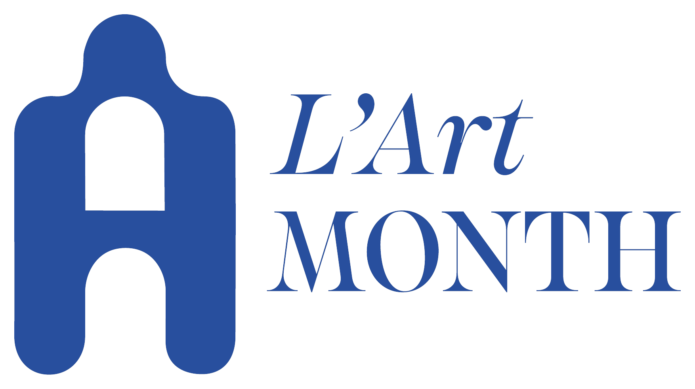

06 / JOURNAL
01 —
Professional news
-
2026
« Inachevé ! »
Group exhibition at L’Orangerie de Cachan.
5–31 October 2026.
Opening reception on 8 October 2026.
This exhibition was part of the Cachan artists’ open studios weekend, held on 10 and 11 October 2026.
-
2026
Daniela Quilici’s Open Studio
Cachan.
10–11 October 2026.
-
2026

Selected for « L’Art Month 2027 »
Annual professional development programme founded by Margaux Derhy.
The programme supports artists in developing their portfolios, presenting their work, building professional networks, engaging with an artistic community and pursuing their artistic research.
-
2026
« AETERNIA — Au Jardin de la Reine »
Pop-up concept store at Galerie AuMédicis.
14–22 September 2026.